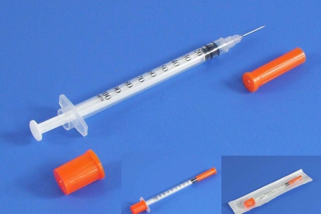

La Federación de Diabéticos Españoles (FEDE) ha advertido este miércoles de que tomará las medidas legales que considere oportunas si el Ministerio de Sanidad y las consejerías correspondientes no se comprometen a erradicar una mala praxis "extendida" entre estos pacientes, la reutilización de agujas. Con ese objetivo, el de conseguir el compromiso de las administraciones sanitarias para que "paren de raíz" esta mala práctica, la FEDE ha lanzado una campaña con la que pretenden concienciar a la población y a los pacientes de los riesgos para la salud de la reutilización, a pesar de estar prohibida. Esta "mala práctica", según ha señalado en rueda de prensa el presidente de la FEDE, Ángel Cabrera, se debe a que no existe un único discurso de las administraciones sobre ella y a que además faltan protocolos sanitarios al respecto. Como ejemplo de la falta de un único discurso, Cabrera ha mencionado el hecho de que en mayo de 2011 Sanidad les dijera que iba a transmitir a las comunidades autónomas que las agujas no se debían reutilizar. Sin embargo, a pesar de ese mensaje, poco después, en 2012, editó una guía práctica en la que se recomendaba a los 3,5 millones de diabéticos diagnosticados -se estima no obstante que son más de cinco- reutilizar las agujas tres o cuatro veces. "Queremos que se diga que no se puede reutilizar. No queda claro lo que opina el ministerio", ha incidido Cabrera, quien ha denunciado también que las comunidades autónomas no dispensan las agujas suficientes, además de no existir "protocolos claros de actuación".
El fiscal superior de Andalucía dice que resulta "inconcebible" que en empresas con directivos con retribuciones millonarias sean despedidos en ERE cientos de empleados
El ministro de Justicia: “El único partido condenado por financiación ilegal ha sido el PSOE”